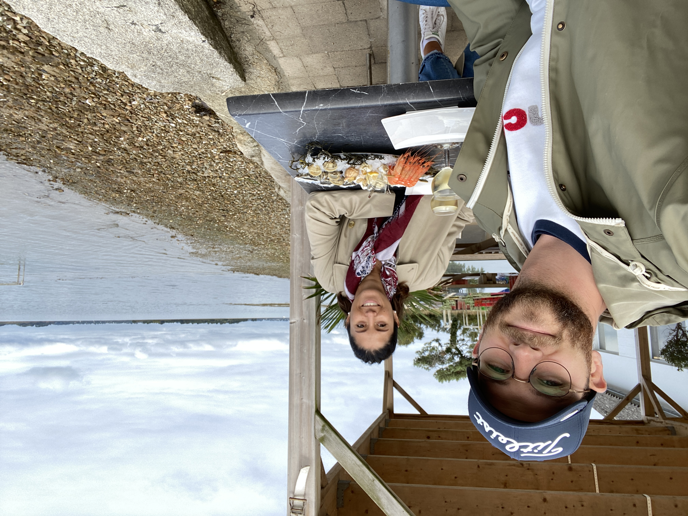
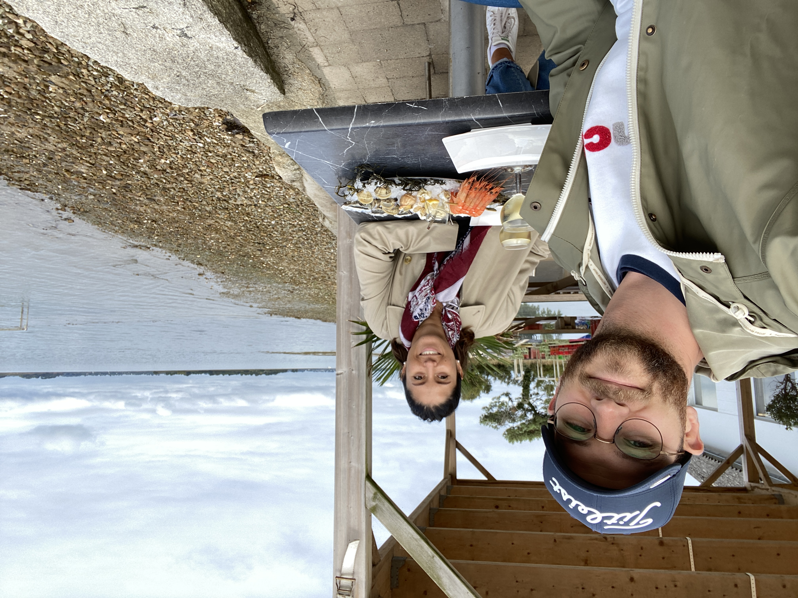
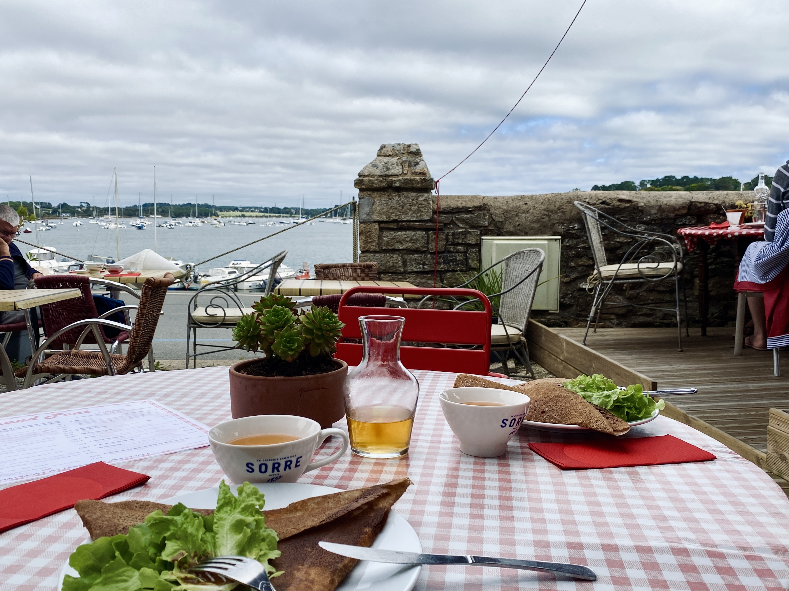

Vannes
Du 24 septembre au 26 septembre
3 jours
- Pointe du Ruault
- L'île-aux-Moines *
- Carnac
- Vannes
- Quiberon
- Saint-Laurent
- Auray
Comment s'y rendre ?
En TGV : 2h30 depuis Paris Montparnasse,
puis location d'une voiture à la gare de Vannes pour pouvoir se déplacer dans le Golfe du Morbihan.
Pointe du Ruault
À peine arrivés à la gare, nous récupérons la voiture et direction la Pointe-du-Ruault pour une dégustation d'huîtres et de fruits de mer.
 

Nos recommendations
- Cabane à Huîtres et fruits de mer : "Les viviers du Ruault"
L'île-aux-moines
Nous nous rendons à Port Blanc pour embarquer sur le ferry qui dessert l'île-aux-Moines.
Premier arrêt dans une crêperie pour prendre des forces avant de faire le tour de l'île.
